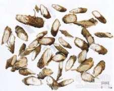

千斤拔

拼音
Qiān Jīn Bá
别名
蔓性千斤拔、一条根、老鼠尾、吊马墩、吊马桩、金牛尾、箭根、钉地根、土黄芩[广西、广东]、钻地风[四川]
来源
为豆科千斤拔属植物千斤拔Moghania philippinensis （Merr. et Rolfe） Li [M. prostrata （Roxb.） Wang et Tang]，以根入药。春、秋采挖，洗净切片晒干，也可鲜用。 注：大叶千斤拔（千斤红）Moghania macrophylla （Willd.） O. Kuntze，两广地区也作千斤拔入药。
生境分布
生长于山坡草丛中。分布福建、台湾、广西、广东、湖北、贵州、江西等地。产广东、广西、四川等地。
药材特点
蔓性半灌木，高1～2米。根粗锥形，形如鼠尾，不易拔出。茎多枝而被短毛，幼时四棱形。三出复叶互生。秋季叶腋抽出总状花序，蝶形花冠红紫色。荚果矩圆形，浅黄色，长约8毫米，有黑色球形种子2粒。
性状
干燥根呈圆锥形，长15～30厘米，根头部较膨大。外表棕红色，有明显皮孔。皮部易剥落。商品多切成长约3～7厘米的斜片状。质坚硬，断面白色，粉性，呈菊花心。
性味
甘、微温，平。
功能主治
祛风湿，强腰膝。用于风湿性关节炎，腰腿痛，腰肌劳损，白带，跌打损伤。
用法用量
0.5～1两。
化学成分
根中含多种黄酮类化合物，已确定结构有：蔓性千斤拔素（flemiphilippinin）C、D。此外还含5，7，3＇，4＇-四羟基-6，8-双异戊烯基异黄酮（5，7，3’，4＇-tetrahydroxy-6,8-diprenylisoflavone），千斤拔素（flemichin）D，羽扇豆醇（lupeol），β-谷甾醇（β-sitosterol）以及碳原子数为22-30的正烷酸。
药理作用
1：无药理作用数据
摘录
《全国中草药汇编》